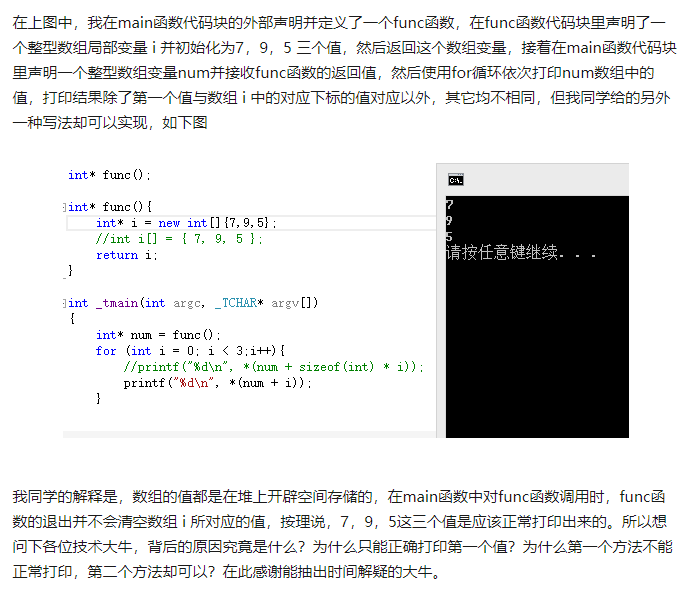

原文连接:https://www.cnblogs.com/tosser/p/11731568.html
这个问题是知乎上的一个问题，看了以后觉得比较有意思。代码短到只有十多行，但是这么短的代码却输出了很奇怪的结果。很多人回答的时候都是站在理论的角度上说明代码的问题，但是实际的问题还是没有说明其中的问题。
问题是“C 语言局部变量，堆与栈的问题？”
问题的地址如下：https://www.zhihu.com/question/60415017
知乎上的问题

以上就是知乎中的问题，基本上把问题也描述清楚了，对于它的问题看似诡异，其实并不复杂。这个问题涉及几个知识点，第一是关于内存分配的问题，第二是关于函数调用时栈帧的开辟与回收的问题。当然了，如果是纯理论的描述问题，其实只会把问题越搞越糊涂，如果结合调试器问题就不同了。
以下是我在知乎的回答（因为当时回答时随意了一些，所以这里再简单的整理了一下，从分割线开始，就是我整理过的回答了）。
遇到类似的问题，通过在调试器中进行单步调试，然后再观察其反汇编代码，一般就知道其中的问题所在了。
先来了解几个简单的概念性的问题：
首先，局部变量保存在栈中；
其次，new 分配的空间在堆中。
栈空间是由 ESP 和 EBP 寻址（x86架构的平台下），这两个寄存器是由 CPU 控制维护的。ebp 作为栈帧的基址来说，函数调用完后会自动恢复到被调用之前，那么栈中的数据其实还是存在的。esp 作为栈顶指针，在函数返回后，也会被收回。虽然栈帧在函数返回后被回收，但是其中的数据并没有被回收，因此之前的数据仍然是存在的。很多书上说，访问这样的地址会给出随机值，其实不是，只是这些值我们不再确定是什么值而已，但是它不是随机的。
new 出来的堆空间，如果不 delete 是不会释放的，也就是说 new 完以后的地址只要不释放，在其他代码中都可以使用。
以上就是 堆 空间和 栈 空间的简单描述。
上面是理论部分，下面实际观察一下。
我用的环境是 VS2012，和提问者的环境不同，但是过程是相同的。
看一下 func 函数的反汇编代码，这里我用的 DEBUG 方式编译的。
在 func 函数的 return 处下断点，然后运行到此处，观察其反汇编代码，并打开寄存器窗口、监视窗口和内存窗口。
看下面的截图：
变量的地址是 0x0103fd6c，而 i 的值是0x0132a670，这值是一个地址，也就是由 new 分配的堆地址，看一下 0x0132a670 这个地址中的值，如下图：
而 0x0103fd6c 是变量 i 的地址，这个地址在栈中，如下图：
上面的寄存器的值是在 func 函数中的值，看一下 ebp 和 esp 的值。
返回 main 函数，如下图：
上图是返回 main 函数后的寄存器的值。
再看 0x0132a670 地址中内存的值仍然没变……
这就是堆的效果，即 new 的情况。
这部分内存如果不是人为去写，一般数据不会被修改或覆盖。
前面说的是数组在堆中的情况，如果是在栈中的话，那么数组 i 的值都在栈中，即7、9、5 也在栈中。
简单说一下。
仍然在 func 的 return 处下断点，运行到这里，观察：
此时在 func 函数内，继续单步返回到 main 函数内：
观察，现在 ESP 和 EBP 已经恢复到 main 函数的栈帧内，而且代码也运行到了 main 的 for 内。
但是内存的栈中，func 函数内的 i 数组仍然存在。虽然栈帧被回收，但是数据仍在，通常情况是无法访问它们的，但是现在把 i 的地址返回给 main 函数，因此还是可以访问到它的。

发现执行到完 call 以后，栈中的数据被破坏了，因为用的是单步步过，其实只要进入 call 以后，原来栈中的数据就被破坏了。
那么为什么 7 能被正确的输出呢？因为在栈还没破坏之前，7 已经当作 printf 的参数被送入栈中当作参数了。看那句 push edx 即可。
剩下的输出就不说了，反正栈已经被破坏了。剩下的就理所当然有问题了。
以上就是我给出问题的答复，其实整个过程还算简单。记得我在学习的时候，我的老师说过这么一句话，“学编程不看内存，相当于游泳不下水”。当然了，也许并不是每门编程语言都有机会去观察其运行时的内存情况，但是，了解如何调试还是非常有趣的事情，因为很多看似不好解释的问题，其实在调试器下面都是可以看到问题本质的。
我的微信公众号：“码农UP2U”